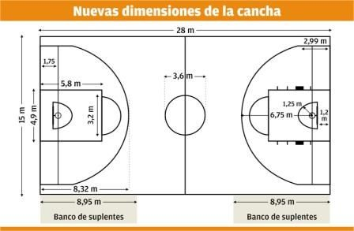

Cómo jugar y reglas del baloncesto
Cómo jugar
El baloncesto se juega con dos equipos de cinco jugadores cada uno. El objetivo es anotar puntos lanzando el balón a través del aro del equipo contrario. El equipo que anota más puntos gana el juego.
Reglas básicas
- El juego comienza con un salto entre dos jugadores en el centro de la cancha.
- El balón se puede pasar, lanzar, botar, golpear o rodar en cualquier dirección, sujeto a ciertas restricciones.
- No se permite correr con el balón sin botarlo (pasos).
- No se permite hacer contacto físico excesivo con los jugadores contrarios (faltas).
- Un equipo tiene 24 segundos para intentar un lanzamiento a canasta.

Volver a la página principal